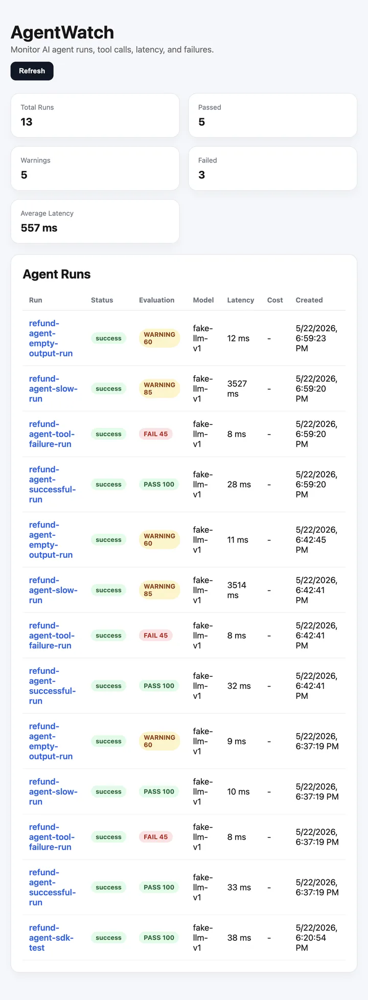
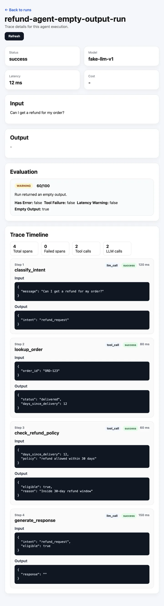

AgentWatch
Observability and evaluation for AI agents: see every run, then flag the ones that went wrong.
- When
- Jun 2026
- Role
- Solo project
- Stack
- Python SDK, FastAPI, React + Vite, SQLite
- Focus
- Agent tracing, rule-based evals
The problem
An agent can fail quietly: a tool call errors, an answer comes back empty, a step takes far too long. Without a record of what happened inside a run, debugging means re-running and guessing.
The approach
AgentWatch has two halves. A Python SDK wraps an agent and records every run as a set of spans: tool calls, latency, inputs, outputs and statuses. A dashboard lets an engineer open a run and inspect each tool call.
What it looks like
Two screens from the dashboard, running against a demo refund agent with a fake LLM. The runs are simulated, not production traffic. Scroll inside the frames to see the full pages.


How a run is scored
Every run starts at 100 and loses points for each problem the rules find.
| Rule | Penalty |
|---|---|
| Any span failed | −30 |
| A tool call failed | −25, on top of the span penalty |
| Run took longer than 3,000 ms | −15 |
| Output is empty | −40 |
A failed span, a failed tool call or an empty output gives fail when the score drops below 50 and warning otherwise. Slowness alone is a warning, and no flags is a pass. That is why the demo runs land where they do:
- successful run: 100, pass
- slow run (3.5 s): 85, warning
- empty output: 60, warning
- failed tool call: 45, fail (30 and 25 off)
A simplified version of these rules, which you can edit, is on the Lab page.
Evaluations
Rule-based evals run over the recorded traces and flag four kinds of problem:
- failed runs
- slow responses
- empty outputs
- tool-execution errors
Rules are deliberately simple and explainable: when a run is flagged, the reason is visible next to the trace.
What I would add next
LLM-judged quality checks alongside the rules, and comparison across runs so a prompt change can be measured against the previous version.
Questions about this project?
I'm looking for entry-level AI/ML engineering roles, especially LLM systems, RAG, agents and evaluation. Email is the fastest way to reach me.
vattikutianvith@gmail.com